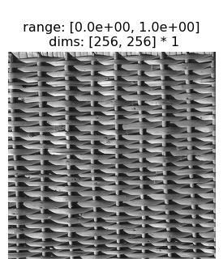
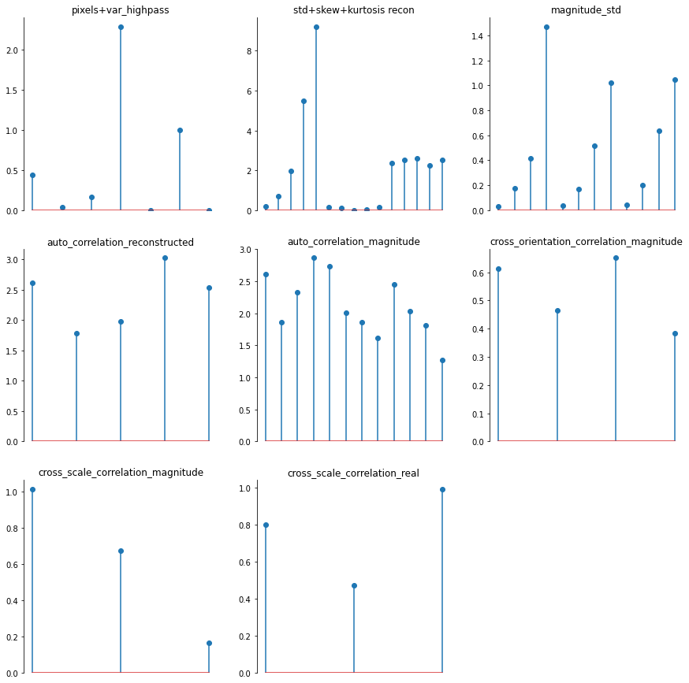
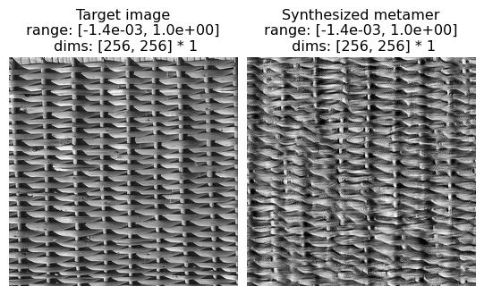
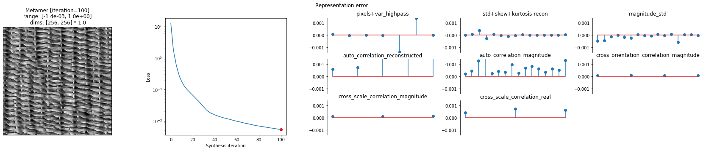

Download
Download this notebook: ps_basic_synthesis.ipynb!
Using the Portilla-Simoncelli model in plenoptic
The original Portilla and Simoncelli, 2000 publication was accompanied by matlab code which computed the model’s output (“analysis”) and generated new metamers for the model (“synthesis”). This code was hyper-specific for the Portilla-Simoncelli texture model and would not work with any other models.
plenoptic includes an implementation of the original model which is compatible with our gradient-based synthesis methods. In this notebook, we will introduce the PortillaSimoncelli class and how to use it with the Metamer class to synthesize model metamers.
Reproducibility
Due to pytorch’s limitations, we cannot guarantee perfect reproducibility. However, the steps shown below have, in our experience, reliably led to good model metamers synthesized in a reasonable length of time for a variety of images, and they are what we suggest. If you use follow these basic steps and are not able to successfully synthesize a good model metamer, please post on our discussion board and we’ll try to help!
See Portilla-Simoncelli optimization details for more information about the specific decisions taken around optimization, including what “good” means.
import matplotlib.pyplot as plt
import torch
import plenoptic as po
%load_ext autoreload
%autoreload 2
# We need to download some additional images for this notebook. In order to do so,
# we use an optional dependency, pooch. If the following raises an ImportError or
# ModuleNotFoundError
# then install pooch in your plenoptic environment and restart your kernel.
from plenoptic.data.fetch import fetch_data
IMG_PATH = fetch_data("portilla_simoncelli_images.tar.gz")
# use GPU if available
DEVICE = torch.device("cuda" if torch.cuda.is_available() else "cpu")
# so that relative sizes of axes created by po.imshow and others look right
plt.rcParams["figure.dpi"] = 72
# set seed for reproducibility
po.tools.set_seed(1)
A quick reminder of what metamers are and why we are calculating them
The primary reason that the original Portilla and Simoncelli, 2000 paper developed the metamer procedure was to assess whether the model’s understanding of textures matches that of humans. While developing the model, the authors originally evaluated it by performing texture classification on a then-standard dataset (i.e., “is this a piece of fur or a patch of grass?”). The model aced the test, with 100% accuracy. After an initial moment of elation, the authors decided to double-check and performed the same evaluation with a far simpler model, which used the steerable pyramid to compute oriented energy (the first stage of the model described here). That model also classified the textures with 100% accuracy. The authors interpreted this as their evaluation being too easy, and sought a method that would allow them to determine whether their model better matched human texture perception.
In the metamer paradigm they eventually arrived at, the authors generated model metamers: images with different pixel values but (near-)identical texture model outputs. They then evaluated whether these images belonged to the same texture class: does this model metamer of a basket also look like a basket, or does it look like something else? Importantly, they were not evaluating whether the images were indistinguishable, but whether they belonged to the same texture family. This paradigm thus tests whether the model is capturing important information about how humans understand and group textures.
Plenoptic’s PortillaSimoncelli class
Before synthesizing a model metamer, let’s spend a bit of time with the PortillaSimoncelli class. First, let’s grab a texture image:
img = po.tools.load_images(IMG_PATH / "fig4a.jpg")
po.imshow(img);

Now let’s create an instance of the PortillaSimoncelli model with the following parameters:
n_scales=4, The number of scales in the steerable pyramid underlying the model.n_orientations=3, The number of orientations in the steerable pyramid.spatial_corr_width=9, The size of the window used to calculate the correlations across steerable pyramid bands.
Running the model on an image will return a tensor of numbers summarizing the “texturiness” of that image, which we refer to as the model’s representation. These statistics are measurements of different properties that the authors considered relevant to a texture’s appearance (where a texture is defined above), and capture some of the repeating properties of these types of images.
model = po.simul.PortillaSimoncelli(
img.shape[-2:], n_scales=4, n_orientations=3, spatial_corr_width=9
)
representation = model(img)
print(representation)
tensor([[[ 4.3503e-01, 4.0737e-02, 1.6215e-01, 2.2822e+00, 0.0000e+00,
9.9608e-01, 1.4031e-02, -8.3651e-02, -4.1651e-01, 2.0114e-03,
1.5868e-01, 4.4227e-02, -2.1160e-01, 1.3117e-01, 8.0251e-02,
-6.5238e-02, -2.0793e-01, -3.0755e-02, 1.0670e-01, -1.7898e-01,
-3.7250e-01, 1.4453e-02, 2.2385e-01, 5.3546e-02, -2.1971e-01,
5.3795e-02, 2.0356e-01, -1.1489e-04, -1.7942e-01, -5.0591e-02,
1.6479e-01, -1.2331e-01, -2.3039e-01, 1.3224e-01, 2.7940e-01,
3.5220e-02, -1.3700e-01, 2.5335e-01, 2.1962e-01, 4.6765e-03,
-1.3843e-01, -5.9765e-02, 2.2401e-01, -1.6522e-01, -3.4491e-01,
5.1476e-02, 3.1688e-01, 7.6033e-02, -2.2353e-01, 2.0804e-02,
3.0784e-01, 1.3029e-01, -1.1940e-01, -3.3892e-02, 3.1589e-01,
-8.2043e-02, -2.3920e-01, 1.7645e-01, 4.1548e-01, 5.9028e-02,
-1.4131e-01, 1.7272e-01, 3.6267e-01, 1.4821e-01, -2.3824e-02,
3.7509e-02, 4.1970e-01, 2.6005e-02, 5.6502e-02, 3.9614e-01,
5.1574e-01, 1.8093e-01, 1.5032e-01, 4.5591e-01, 4.1249e-01,
2.2007e-01, 2.1231e-01, 9.8519e-02, 3.2937e-01, -3.8855e-02,
-3.9623e-01, 1.0470e-01, 3.9452e-01, 1.2771e-01, -1.2118e-01,
2.7136e-01, 3.4694e-01, 2.3645e-01, 8.5209e-03, 3.9093e-02,
4.6150e-01, 1.3774e-01, -2.3852e-01, 2.4214e-01, 5.2390e-01,
1.2700e-01, -1.5582e-01, 6.3392e-02, 4.5414e-01, 3.0738e-01,
9.6085e-02, 6.0846e-02, 6.2445e-01, 3.6221e-01, 1.3585e-01,
4.8427e-01, 6.7924e-01, 2.9207e-01, 1.3059e-01, 3.5463e-01,
5.8643e-01, 4.4883e-01, 2.7155e-01, -4.5081e-02, 7.7603e-01,
5.7595e-01, 5.3595e-01, 7.7764e-01, 8.2953e-01, 6.4917e-01,
6.6849e-01, 7.8939e-01, 7.3513e-01, 6.6471e-01, 4.9496e-01,
3.0809e-02, 3.6407e-01, 9.5241e-02, -3.6266e-01, 1.3664e-01,
4.0467e-01, 1.7216e-01, -1.4556e-01, 4.7207e-01, 2.9522e-01,
2.3299e-01, 3.2436e-02, 3.2233e-02, 5.1687e-01, 3.4013e-01,
-1.2985e-01, 2.8278e-01, 5.3505e-01, 1.9253e-01, -8.6846e-02,
2.6552e-01, 4.5454e-01, 3.5339e-01, 7.1564e-02, -1.8911e-02,
7.1779e-01, 6.3496e-01, 3.2480e-01, 5.3702e-01, 6.9369e-01,
3.6513e-01, 4.9982e-02, 5.4886e-02, 6.6431e-01, 5.6074e-01,
2.9588e-01, 5.6925e-02, 9.1351e-01, 8.9333e-01, 7.9459e-01,
8.4694e-01, 8.8730e-01, 7.4085e-01, 5.5154e-01, 4.9881e-01,
8.8821e-01, 8.4233e-01, 7.2324e-01, 5.7928e-01, 3.0503e-01,
7.9549e-02, -3.0930e-01, 1.1650e-01, 3.2346e-01, 1.5656e-01,
-1.9570e-01, 2.6296e-01, 1.7081e-01, 1.1393e-01, -3.5476e-02,
4.9285e-02, 4.3372e-01, 2.8028e-01, -1.4749e-01, 2.5087e-01,
4.3617e-01, 1.8380e-01, -1.6140e-01, 4.3997e-01, 3.5029e-01,
2.3268e-01, 5.1409e-02, 8.8381e-02, 6.0421e-01, 4.9933e-01,
2.1294e-01, 4.8195e-01, 5.5844e-01, 3.2305e-01, 7.0232e-02,
1.7078e-01, 5.7273e-01, 4.3484e-01, 3.4366e-01, 3.7072e-01,
7.6742e-01, 6.6316e-01, 5.8189e-01, 7.6957e-01, 7.0549e-01,
6.1595e-01, 3.6633e-01, -1.9069e-02, 7.7563e-01, 6.8945e-01,
6.8031e-01, 6.8394e-01, 8.3928e-01, 6.9533e-01, 7.2486e-01,
9.1736e-01, 8.4258e-01, 8.4401e-01, 7.3671e-01, 4.3144e-01,
8.3595e-01, 8.0705e-01, 7.1621e-01, 4.6810e-01, 1.9841e-01,
-5.4965e-02, -3.7382e-01, 7.8733e-02, 1.8136e-01, 9.5178e-02,
-1.8199e-01, 2.0129e-02, 2.1406e-02, -2.3448e-02, -8.4968e-02,
6.9358e-02, 2.8337e-01, 4.7589e-02, -2.7168e-01, 1.9070e-01,
2.7450e-01, 1.0384e-01, -2.3220e-01, 2.4058e-01, 1.6653e-01,
4.6752e-02, -2.5380e-02, 1.4258e-01, 3.9282e-01, 1.4795e-01,
2.8469e-02, 3.8560e-01, 3.6499e-01, 2.0018e-01, -5.1319e-02,
3.3280e-01, 3.2628e-01, 1.8077e-01, 1.3752e-01, 2.5405e-01,
4.9507e-01, 2.0950e-01, 3.5227e-01, 6.3946e-01, 4.5053e-01,
4.0848e-01, 3.3969e-01, 6.5511e-02, 4.5010e-01, 3.5344e-01,
3.1431e-01, 2.3804e-01, 5.4177e-01, 2.0423e-01, 4.9743e-01,
7.7798e-01, 5.3626e-01, 5.6594e-01, 5.3566e-01, -8.0192e-02,
4.8578e-01, 4.3559e-01, 4.5158e-01, 1.0235e-01, 5.0887e-01,
1.3344e-01, 3.6936e-01, 6.5931e-01, 5.7328e-01, 4.4337e-01,
4.2561e-01, 2.5546e-01, 4.5726e-01, 3.5007e-01, 4.3797e-01,
7.6352e-02, 8.9517e-02, -1.5724e-01, -4.0370e-01, 4.6928e-02,
5.4391e-02, 4.3090e-02, -2.5619e-01, 3.7947e-02, -1.0449e-01,
-6.9937e-02, -1.9135e-01, 5.4924e-02, 1.4005e-01, -1.0282e-01,
-2.7175e-01, 1.4609e-01, 1.2823e-01, 2.3661e-02, -2.2466e-01,
3.0414e-03, -2.7329e-02, -5.0994e-02, -1.9443e-01, 8.7050e-02,
2.0240e-01, -4.4688e-02, 5.7009e-02, 3.2118e-01, 2.0132e-01,
9.3166e-02, -1.2763e-01, 1.8656e-01, 5.1723e-02, 1.6301e-02,
-7.1784e-02, 1.3394e-01, 2.6005e-01, -1.6025e-03, 4.0673e-01,
5.5595e-01, 2.5991e-01, 2.7471e-01, 1.7954e-01, 2.2653e-01,
1.1818e-01, 1.2862e-01, 1.7976e-01, 1.8182e-01, 2.8815e-01,
1.0856e-02, 5.6654e-01, 6.8936e-01, 2.9992e-01, 4.0209e-01,
5.0005e-01, -1.5645e-03, 1.6513e-01, 2.0261e-01, 3.8507e-01,
2.1224e-01, 2.7325e-01, -1.1660e-02, 4.3229e-01, 5.8384e-01,
3.2585e-01, 3.0993e-01, 3.3740e-01, -8.4208e-02, 1.9955e-01,
1.5583e-01, 2.7909e-01, 1.4632e-01, 2.2523e-01, -6.1668e-02,
9.6185e-02, 3.3905e-01, 3.2000e-01, 1.2138e-01, 1.3449e-02,
1.5965e-01, 2.1952e-01, 5.8193e-02, 2.6048e-02, 8.1885e-03,
1.8667e-04, -1.5908e-01, -3.7783e-01, 2.2394e-02, 5.4163e-03,
1.7725e-02, -2.5458e-01, 1.1556e-01, -1.7088e-01, -2.5689e-02,
-2.6994e-01, 3.5340e-02, 2.8715e-02, -7.5325e-02, -2.5952e-01,
1.2118e-01, 5.9378e-02, -1.5406e-02, -2.7841e-01, -1.7266e-02,
-1.5126e-01, -2.2391e-02, -2.4765e-01, 6.6938e-02, 6.1945e-02,
3.1292e-02, 4.3090e-02, 2.9235e-01, 1.1781e-01, 4.7316e-02,
-9.8233e-02, -6.2761e-03, -1.2281e-01, 2.6033e-02, -8.8834e-02,
1.5351e-01, 9.2377e-02, 1.3266e-01, 3.6064e-01, 5.2069e-01,
1.6806e-01, 2.4042e-01, 1.3202e-01, 1.5848e-01, -8.0810e-02,
1.2803e-01, 1.2790e-01, 2.1913e-01, 1.0838e-01, 1.9371e-01,
4.9606e-01, 6.5286e-01, 1.9439e-01, 3.8341e-01, 3.5014e-01,
1.6143e-01, -2.7708e-02, 2.0937e-01, 2.0454e-01, 1.5325e-01,
1.0294e-01, 1.8961e-01, 3.5529e-01, 5.5453e-01, 2.0067e-01,
2.9263e-01, 3.3047e-01, -3.1294e-02, 2.2925e-02, 1.6355e-01,
1.1507e-01, 3.4958e-03, 7.9712e-02, 1.2212e-01, 2.6851e-02,
3.1835e-01, 1.9876e-01, 1.1893e-01, 1.2820e-02, -5.7918e-02,
5.6670e-02, 4.5020e-02, -1.6495e-02, -6.6833e-02, 4.7853e-02,
1.9185e-02, -2.8821e-01, 1.1681e-01, 1.8498e-01, 3.6812e-02,
-2.0938e-01, 1.2135e-01, 7.3463e-02, -3.5209e-02, -1.4400e-01,
-4.4390e-02, 1.5950e-01, 1.0445e-01, -1.7583e-02, 4.2442e-02,
1.6170e-01, 2.3756e+00, 2.5154e+00, 2.6021e+00, 2.2431e+00,
2.5174e+00, 8.5442e-02, -2.2076e-01, -1.4322e-01, 5.0064e-01,
4.1918e-01, 2.4406e-01, -2.0898e-01, -2.6201e-01, 4.9960e-01,
4.2210e-01, 2.5613e-01, -1.8675e-01, -2.1622e-01, -3.8555e-02,
-5.7921e-02, 3.7054e-01, 1.8237e-02, -3.1595e-01, 5.0195e-01,
4.2380e-01, 4.1560e-01, 6.0938e-02, -3.6655e-01, -4.5371e-02,
-6.5467e-02, 4.5197e-01, 8.5144e-02, -2.6046e-01, -6.7621e-01,
-5.0417e-01, 4.7571e-01, 2.3979e-01, -7.6504e-02, 5.3690e-01,
4.8871e-01, 5.7774e-01, 3.4507e-01, -1.1310e-01, -1.3330e-02,
-3.1929e-02, 6.8882e-01, 4.8212e-01, -1.0721e-02, -6.5303e-01,
-5.0120e-01, 7.8273e-01, 6.3091e-01, 3.7441e-01, 1.4800e-01,
2.1383e-01, 4.7413e-01, 1.8394e-01, -2.0404e-01, 5.5746e-01,
5.6726e-01, 6.0638e-01, 3.1300e-01, -1.2337e-01, 6.6658e-03,
2.3101e-03, 7.6649e-01, 5.3562e-01, 1.1225e-01, -6.4216e-01,
-5.1670e-01, 9.2681e-01, 8.4090e-01, 6.6039e-01, 1.7999e-01,
2.5766e-01, 2.9525e-01, -1.0006e-01, -3.5187e-01, 5.2271e-01,
5.3113e-01, 4.0426e-01, -2.3591e-02, -3.7264e-01, -2.1831e-02,
-4.7587e-02, 5.4018e-01, 1.3924e-01, -2.6188e-01, -6.8812e-01,
-6.2565e-01, 6.9249e-01, 4.1519e-01, 1.9457e-01, 1.0004e-01,
7.8033e-02, 7.9417e-01, 6.3640e-01, 5.6719e-01, 9.2482e-01,
8.4131e-01, 7.1361e-02, -2.8098e-01, -1.4252e-01, 4.8442e-01,
4.8613e-01, 1.4745e-01, -2.5887e-01, -1.8157e-01, -3.9506e-02,
-4.9394e-02, 2.4018e-01, -2.0941e-01, -1.4019e-01, -7.0615e-01,
-6.4761e-01, 3.4855e-01, -9.2786e-02, 1.7737e-01, 2.8331e-02,
-7.3134e-02, 4.3844e-01, 3.7140e-02, 4.1304e-01, 8.2339e-01,
6.2236e-01, 4.6964e-01, 9.1959e-02, 1.4874e-01, 8.7989e-02,
1.0618e-01, -6.2911e-02, -1.8286e-01, -2.1925e-01, 4.8005e-01,
4.9009e-01, -1.7528e-03, -1.6186e-01, -1.3534e-01, -2.0759e-02,
2.5044e-02, 7.1120e-02, -1.5204e-01, 3.6069e-02, -6.6836e-01,
-5.5411e-01, 1.5106e-01, -1.3525e-01, 4.5663e-01, 3.4490e-02,
-7.2756e-02, 2.1837e-01, -1.2245e-01, 7.5086e-01, 8.0500e-01,
5.4732e-01, 2.5229e-01, -1.4081e-01, 4.8325e-01, 9.8086e-02,
8.4046e-02, 2.5960e-01, -1.6899e-01, -1.1425e-03, -6.4717e-01,
-4.6976e-01, -1.3281e-01, 4.3424e-02, -3.3865e-01, 4.7876e-01,
4.7099e-01, -8.8109e-02, 9.8877e-02, -3.1256e-01, -6.8588e-03,
6.8742e-02, -3.5304e-02, 1.4845e-01, -1.9743e-01, -6.3917e-01,
-4.7769e-01, 2.0646e-02, 1.9109e-01, 1.9447e-01, 4.1628e-02,
-4.8245e-02, 6.5944e-02, 1.7693e-01, 5.2926e-01, 7.9766e-01,
5.1774e-01, 8.7908e-02, 6.3047e-02, 3.5837e-01, 1.1740e-01,
6.7572e-02, 9.1861e-02, -8.1045e-02, -3.0887e-02, -6.1274e-01,
-4.6529e-01, 8.9960e-02, -1.7278e-01, -1.7098e-01, -2.5787e-02,
-6.2829e-02, 1.9447e-01, 7.0594e-01, 1.9720e+00, 5.4777e+00,
9.2067e+00, 9.8682e-02, -3.2035e-02, -1.6609e-01, 2.1359e-01,
2.4681e-01, 5.7746e-02, -2.4006e-01, 2.1176e-01, 5.5378e-01,
4.5921e-01, 5.8211e-01, 2.3894e-01, 3.1772e-02, 1.7258e-01,
4.1381e-01, 1.4715e+00, 3.6419e-02, 1.6959e-01, 5.1834e-01,
1.0228e+00, 4.0987e-02, 1.9904e-01, 6.3963e-01, 1.0448e+00,
7.4127e-01, 5.0523e-01, 1.9606e-02, -5.0401e-02, -1.3818e-01,
-1.0948e-01, 1.6865e-01, -3.0368e-01, -6.8324e-02, -1.3589e-02,
-6.9278e-02, 1.3212e-02, 3.7806e-01, 2.4463e-01, -2.0553e-02,
1.6575e-01, -3.0183e-02, -3.5113e-02, 7.3359e-02, -9.4524e-03,
3.2407e-02, 1.4360e-01, -1.3086e-01, -7.3953e-02, 4.9697e-01,
-2.1314e-02, -4.3715e-02, -3.2578e-01, -2.5468e-01, 7.8628e-01,
2.1556e-02, 3.0955e-02, 3.6618e-01, -2.9581e-02, 3.3662e-03,
4.1006e-01, 2.7069e-01, -2.3529e-01, -2.7907e-02, -3.5714e-02,
-3.2099e-02, 5.6189e-03, -1.7968e-01, -1.2176e-01, -1.0014e-02,
-4.4911e-02, -3.7612e-02, 1.7259e-01, 1.1450e-01, -3.7512e-02,
2.1829e-02, 2.3468e-02, -2.3684e-02, 4.2237e-02, 4.7307e-02,
-3.1009e-02, -2.4802e-03, -1.5177e-01, -4.5117e-02, 2.1118e-02,
-2.3872e-01, -9.7912e-02, 1.4673e-02, -9.2302e-02, -3.9110e-02,
1.5488e-01, 2.8416e-02, -4.6825e-02, 4.2262e-02, 6.9791e-03,
-1.0366e-04, 3.3197e-02, 1.1672e-01, -1.4355e-02, -4.8629e-03,
-2.1340e-01, -3.6609e-02, -4.3491e-03, -5.0793e-01, -2.5092e-01,
-2.9943e-02, 2.3304e-03]]])
The model’s representation consists of several different classes of statistics. We will explore these statistics and how they relate to visual textures in more detail in the Understanding Portilla-Simoncelli model statistics notebook, but the class has two methods which can help you better understand the representation:
convert_to_dictwill turn the representation tensor into a dictionary with informative keys:
rep_dict = model.convert_to_dict(representation)
for k, v in rep_dict.items():
print(k, v.shape)
pixel_statistics torch.Size([1, 1, 6])
auto_correlation_magnitude torch.Size([1, 1, 9, 9, 3, 4])
skew_reconstructed torch.Size([1, 1, 5])
kurtosis_reconstructed torch.Size([1, 1, 5])
auto_correlation_reconstructed torch.Size([1, 1, 9, 9, 5])
std_reconstructed torch.Size([1, 1, 5])
cross_orientation_correlation_magnitude torch.Size([1, 1, 3, 3, 4])
magnitude_std torch.Size([1, 1, 3, 4])
cross_scale_correlation_magnitude torch.Size([1, 1, 3, 3, 3])
cross_scale_correlation_real torch.Size([1, 1, 3, 6, 3])
var_highpass_residual torch.Size([1, 1, 1])
The statistics have also been reshaped so that e.g., the `auto_correlation_magnitude` representation has shape `(batch, channel, spatial_corr_width, spatial_corr_width, n_orientations, n_scales)`, which might make understanding the values easier.
plot_representationwill plot a summarized version of the representation tensor
model.plot_representation(representation)
(<Figure size 1080x1080 with 8 Axes>,
[<Axes: title={'center': 'pixels+var_highpass'}>,
<Axes: title={'center': 'std+skew+kurtosis recon'}>,
<Axes: title={'center': 'magnitude_std'}>,
<Axes: title={'center': 'auto_correlation_reconstructed'}>,
<Axes: title={'center': 'auto_correlation_magnitude'}>,
<Axes: title={'center': 'cross_orientation_correlation_magnitude'}>,
<Axes: title={'center': 'cross_scale_correlation_magnitude'}>,
<Axes: title={'center': 'cross_scale_correlation_real'}>])

This plot will be also useful when investigating metamer synthesis progress, so that we can see which statistics are matched and which still differ.
When the model representation of two images match, the model considers the two images identical and we say that those two images are model metamers. Synthesizing a novel image that matches the representation of some arbitrary input is the goal of the Metamer class, as described in the next section.
Synthesizing Portilla-Simoncelli Texture Model Metamers
Synthesizing Portilla-Simoncelli model metamers require a bit of extra options compared to the basic Metamer usage. This section will demonstrate how to synthesize a model metamer for this wicker basket texture:
po.imshow(img);
The following settings seem to reliably find good metamers for this model. Here, we just give a brief overview of these options; see the Portilla-Simoncelli optimization details notebook for more information.
max_iter=100puts an upper bound (of 100) on the number of iterations that the optimization will run.store_progress=Truetells the metamer class to store the progress of the metamer synthesis process.loss_functionspecifies the loss function to use. Here, we use a loss that we know works well for this model, which reweights some of the representation to find a better solution.optimizer/optimizer_kwargsspecifies the torch optimizer to use and its keyword arguments. Here, we use :class:~torch.optim.LBFGS, which uses an estimate of the Hessian matrix (which contains all second-order partial derivatives) to find the best solution.
This process takes about 4 minutes on my laptop without a GPU. How long it will take depends on your system and, in particular, whether you have a GPU.
# send image and PS model to GPU, if available. then Metamer will also
# use GPU
img = img.to(DEVICE)
model = po.simul.PortillaSimoncelli(img.shape[-2:]).to(DEVICE)
loss = po.tools.optim.portilla_simoncelli_loss_factory(model, img)
met = po.synth.Metamer(
img,
model,
loss_function=loss,
)
opt_kwargs = {
"max_iter": 10,
"max_eval": 10,
"history_size": 100,
"line_search_fn": "strong_wolfe",
"lr": 1,
}
met.setup(optimizer=torch.optim.LBFGS, optimizer_kwargs=opt_kwargs)
met.synthesize(max_iter=100, store_progress=True)
Now we can visualize the output of the synthesis optimization. First we compare the Target image and the Synthesized image side-by-side. We can see that they appear perceptually similar — that is, for this texture image, matching the Portilla-Simoncelli texture stats gives you an image that the human visual system also considers similar.
po.imshow(
[met.image, met.metamer],
title=["Target image", "Synthesized metamer"],
vrange="auto1",
);

We can also use plenoptic’s plot_synthesis_status method to see how things are going. The image on the left shows the metamer at this moment in synthesis, while the center plot shows the loss over time, with the red dot pointing out the current loss, and the rightmost plot shows the representation error (i.e., the plot_representation figure from above, but for model(target image) - model(synthesized image)).
We can see the synthesized texture on the leftmost plot. The overall synthesis error decreases over the synthesis iterations (subplot 2). The remaining plots show us the error broken out by the different texture statistics; see Understanding Portilla-Simoncelli model statistics to better understand them.
po.synth.metamer.plot_synthesis_status(
met, width_ratios={"plot_representation_error": 3.1}
)
(<Figure size 2131.2x360 with 11 Axes>,
{'display_metamer': 0,
'plot_loss': 1,
'plot_representation_error': [3, 4, 5, 6, 7, 8, 9, 10, 2],
'misc': []})

Further reading
To see more texture model metamers with different types of images, see the Example Portilla-Simoncelli metamers from different texture classes notebook.
Alternatively, to learn more:
about the different components of the model’s representation, read the Understanding Portilla-Simoncelli model statistics notebook.
about the optimization choices taken above, read the Portilla-Simoncelli optimization details notebook.